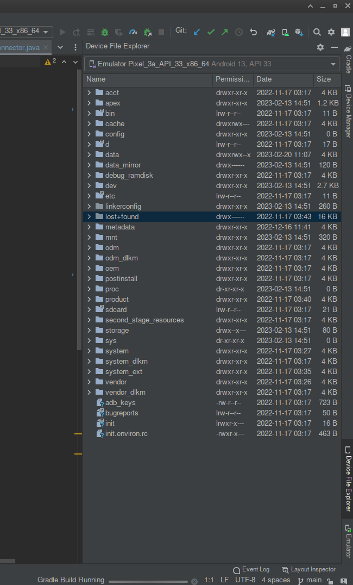
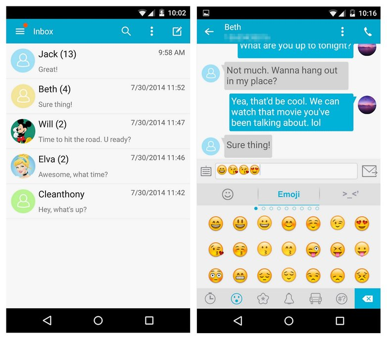
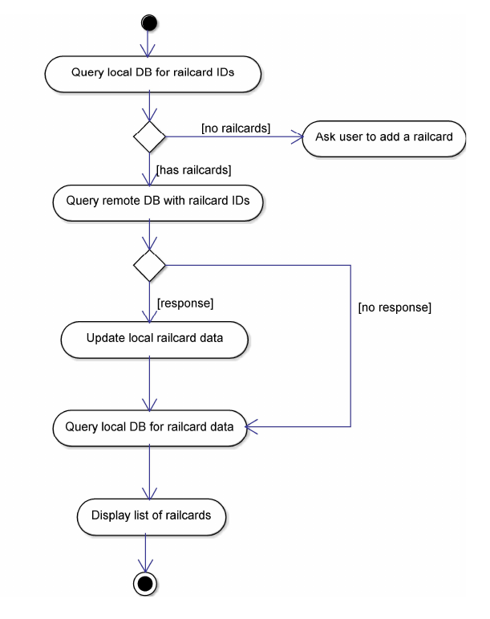

Developing a Database Mobile Application
Mobile Application Development
David Gundry
d.gundry@yorksj.ac.uk
Based on content by Abdulrazaq Abba
## Overview
1. Why databases?
2. Databases
3. SQL
4. Using Databases in an App
5. Development
## Why Databases?
#### Database
An organised collection of data stored and accessed electronically [[Wikipedia]](https://en.wikipedia.org/wiki/Database)
Databases typically store data on disk and persist for a relatively long time (i.e. multiple sessions)
#### Why databases?
We generate and consume data constantly. This data needs to be stored and used for different purposes.
* **Purchases:** shop, stock, barcode, price, pay, refund, ...
* **Banking:** card, PIN, balance, transfer, withdrawal, deposit, ...
* **Social Media:** login, status, messages, comment, likes, ...
* ...
#### Why database mobile applications?
Most apps are fundamentally a user interface to a database.
* **Retrieve** information from a database and present it to the user
* e.g. a calendar app searches for upcoming events and displays a notification
* **Record** user input and actions and store in database
* e.g. a user bookmarks a webpage to find later
#### Databases are profitable
Many of the most successful apps have little intrinsic value beyond the data they provide access to
https://www.businessofapps.com/data/most-popular-apps/
| App | Downloads (mm) |
| ---- | ------------- |
| **TikTok** | 672 |
| **Instagram** | 548 |
| **Facebook** | 449 |
| **WhatsApp** | 424 |
| CapCut | 357 |
| **Snapchat** | 330 |
| **Telegram** | 310 |
| Subway Surfers | 304 |
| Stumble Guys | 254 |
| **Spotify** | 238 |
## Databases
#### Database Management System (DBMS)
"Software system that enables users to define, create, maintain and control access to the database" (Connolly and Begg, 2014)
#### Relational Database Management System (RDBMS)
We will mostly be talking about _Relational Databases_ using a RDBMS, e.g.
* SQLite
* MySQL
* Microsoft SQL Server
An RDBMS provides efficient, reliable, convenient and safe multi-user storage and access to massive amounts of persistent data.
#### Relational Databases
Relational Databases store data in tables with a fixed number of columns for the types of data it stores. Each record is a row in this table.
| StockID | Label | Price | Supplier |
| ------- | ----- | ----- | ------------ |
| A01 | Apple | 0.4 | 10421 |
| B02 | Banana | 0.25 | 14910 |
| SupplierID | Name | Source |
| ---------- | ----- | ----- |
| 10421 | Farmers | UK |
| 14910 | Food Inc. | Non-EU |
Database Design
In groups, design a relational database for a booking app.
1. What tables do you need?
2. What will the columns be? What are their types?
3. What keys will you use to associate data in different tables?
SQLite is more flexible with types than other databases.
Standard MYSQL types can be used, but under the hood they are grouped into classes:
* "NULL. The value is a NULL value.
* INTEGER. The value is a signed integer, stored in 0, 1, 2, 3, 4, 6, or 8 bytes depending on the magnitude of the value.
* REAL. The value is a floating point value, stored as an 8-byte IEEE floating point number.
* TEXT. The value is a text string, stored using the database encoding (UTF-8, UTF-16BE or UTF-16LE).
* BLOB. The value is a blob of data, stored exactly as it was input."
from https://www.sqlite.org/datatype3.html
## SQL
We interact with an RDBMS by sending commands in a language called **SQL**, e.g.
SELECT * FROM Products;
#### Common SQL Commands:
1. `CREATE TABLE`
2. `INSERT INTO`
3. `SELECT`
4. `UPDATE`
5. `DELETE`
#### Executing SQL in Android
In Android if we are using a `SQLiteDatabase` we can use various helper methods to execute SQL queries including:
void SQLiteDatabase.execSQL(String query)
For example, from within a `SQLiteOpenHelper`:
SQLiteDatabase db = this.getReadableDatabase();
db.execSQL( /* ... */ );
However there are other helper methods that we must use if our query returns data.
#### Create a table in SQL
CREATE TABLE table_name (
column1 datatype,
column2 datatype,
column3 datatype,
....
);
For example:
CREATE TABLE Stock
(
StockID CHAR(3),
Label VARCHAR(15),
Price DECIMAL(5,2),
Supplier CHAR(5)
);
| StockID | Label | Price | Supplier |
| ------- | ----- | ----- | ------------ |
#### Create table in Android with `SQLiteDatabase`
Write SQL `CREATE` query and execute on the database using
void SQLiteDatabase.execSQL(String query)
For example
SQLiteDatabase db = this.getReadableDatabase();
db.execSQL("CREATE TABLE Users (Username TEXT, Password TEXT)");
| Username | Password |
| ------- | ----- |
#### Adding records to a table in SQL
INSERT INTO table_name (
column1,
column2,
column3,
...)
VALUES (
value1,
value2,
value3,
...);
For example:
INSERT INTO Stock
VALUES (
'A01',
'Apple',
0.4,
10421);
| StockID | Label | Price | Supplier |
| ------- | ----- | ----- | ------------ |
| A01 | Apple | 0.4 | 10421 |
#### Adding records to a table in Android
Instead of calling `SQLiteDatabase.execSQL(String query)` to run `INSERT` it is better practice to use `SQLiteDatabase.insert`
SQLiteDatabase.insert(String table,
String nullColumnHack,
ContentValues values)
For example
SQLiteDatabase db = this.getReadableDatabase();
ContentValues values = new ContentValues();
values.put("Username","john");
values.put("Password","password");
db.insert("Users", null, values)
| Username | Password |
| ------- | -------- |
| john | password |
#### Getting records from a table in SQL
SELECT _attributes_ FROM _table_;
SELECT Label, Price FROM Products;
| Label | Price |
| ----- | ----- |
| Apple | 0.4 |
| Mango | 1.2 |
SELECT _attributes_ FROM _table_ WHERE _conditions_
SELECT Label, Price FROM products WHERE Price < 0.5;
| Label | Price |
| ----- | ----- |
| Apple | 0.4 |
#### Getting records from a table in Android
We use `SQLiteDatabase.rawQuery(String query)` to execute a `SELECT` command
public Cursor rawQuery (String sql,
String[] selectionArgs)
For example
String selectQuery = "SELECT * FROM Users"
SQLiteDatabase db = this.getReadableDatabase();
Cursor cursor = db.rawQuery(selectQuery, null);
| username | password |
| ------- | -------- |
| john | password |
| mary | 12345 |
#### Updating records in a table in SQL
UPDATE table_name
SET column1 = value1, column2 = value2, ...
WHERE condition;
For example:
| StockID | Label | Price | Supplier |
| ------- | ----- | ----- | ------------ |
| A01 | Apple | 0.4 | 10421 |
UPDATE Stock
SET Price = 0.45
WHERE StockID = "A01";
| StockID | Label | Price | Supplier |
| ------- | ----- | ----- | ------------ |
| A01 | Apple | 0.45| 10421 |
#### Updating records in a table in Android
To update records we use `SQLiteDatabase.update()`
int update (String table,
ContentValues values,
String whereClause,
String[] whereArgs)
For example
SQLiteDatabase db = this.getReadableDatabase();
ContentValues values = new ContentValues();
values.put("password", "newpassword");
int numRowsAffected = db.update("Users", values, "username='?'", ["john"]]);
| username | password |
| ------- | -------- |
| john | newpassword |
| mary | 12345 |
#### Delete records from a table in SQL
DELETE FROM table_name WHERE condition;
For example:
| StockID | Label | Price | Supplier |
| ------- | ----- | ----- | ------------ |
| A01 | Apple | 0.4 | 10421 |
DELETE FROM Stock
WHERE StockID = "A01";
| StockID | Label | Price | Supplier |
| ------- | ----- | ----- | ------------ |
#### Deleting records from a table in Android
To delete records we use `SQLiteDatabase.delete()`
int delete (String table,
String whereClause,
String[] whereArgs)
For example
SQLiteDatabase db = this.getReadableDatabase();
db.delete("Users", "Username='?' and Password='?'", ["john", "newpassword")
| username | password |
| ------- | -------- |
| mary | 12345 |
## Using Databases in an App
#### Where is our database?
* Store data on client device, use local DBMS (e.g. SQLite)
* Android provides tools (e.g. `SQLiteOpenHelper`) to make this easy
* Store data on server, query DBMS on remote server (e.g. MySQL)
* Need to configure external server
### Local Database
Stored on same device as app.
* Store data that persists between uses
* Android will sometimes kill your app's process - data in memory is lost
* Access data from multiple activities
* Share data between apps (that use the same database connector)
* More flexible than using `SharedPreferences`
* Store datasets that can be bundled with app
#### Option 1: Create your own database in-app
* Created on first use with e.g. `SQLiteOpenHelper`
* Usually stored in `/data/data/my.package.name/databases/`
* (note users cannot access this directory by default)
* Access files on device using Device File Explorer in Android Studio

Using a database connector
Recall that we created a database connector using SQLiteOpenHelper in a previous lecture.
public class DBConnector extends SQLiteOpenHelper {
public static int VERSION = 1;
public DBConnector(Context context, SQLiteDatabase.CursorFactory factory){
super(context, "my_database.db", factory, VERSION);
}
@Override
public void onCreate(SQLiteDatabase db) {
db.execSQL( /* ... */ );
}
@Override
public void onUpgrade(SQLiteDatabase db, int oldVersion, int newVersion) {
}
/* ... */
}
#### Option 2: Bundle database with app
* For apps that ship with a large database
* Create database in assets folder, ship it with `.apk`
* Some games do this to store game data on disk
* Quicker than creating and populating a large database on device
#### Option 3: Access built-in databases
* Use a `ContentResolver` from `getContentResolver()` to
* Access a `ContentProvider` from Android OS or other apps, e.g.
* SMS
* Media
* Calendar
* Contacts
* A `ContentProvider` abstracts a data source, e.g. `SQLiteDatabase`
* Identified with a `content://` URI
#### SMS app example
Retrieve records of SMS messages from Android
public static final String INBOX = "content://sms/inbox";
public static final String SENT = "content://sms/sent";
public static final String DRAFT = "content://sms/draft";
Cursor cursor = getContentResolver().query(Uri.parse(INBOX), null, null, null, null);
if (cursor.moveToFirst())
do {
String address = c.getString(c.getColumnIndexOrThrow("address"));
String body = c.getString(c.getColumnIndexOrThrow("body"));
String read = c.getString(c.getColumnIndex("read"));
String date = c.getString(c.getColumnIndexOrThrow("date"));
/* ... */
} while (cursor.moveToNext());

### Remote Databases
Accessed remotely e.g. over HTTP with a REST (Representational State Transfer) API.
* Share data between users or devices
* Share data across family of services, applications, websites
* Exploit for data analytics and business intelligence
* Access datasets that cannot be bundled with app
* Data can be kept up to date
### REST (Representational State Transfer)
A standard architectural style for accessing resources via HTTP.
Requests are make using HTTP requests, such as `GET` and `POST`. Responses are delivered via HTTP.
Stateless - each request is independent.
#### REST Databases over HTTP
To make a HTTP request we will need the Internet permission
There are various libraries for making HTTP requests in Android, such as Volley.
dependencies {
implementation 'com.android.volley:volley:1.2.1'
}
Send a request to a REST API endpoint using Volley
// Instantiate the RequestQueue.
RequestQueue queue = Volley.newRequestQueue(this);
// Create a request to the endpoint specified in the API documentation
String url = "https://my.database.example.com/endpoint/"
JsonObjectRequest jsonObjectRequest = new JsonObjectRequest(
Request.Method.GET, url, null, new Response.Listener() {
@Override
public void onResponse(JSONObject response) {
/* ... do something with response */
}
}, new Response.ErrorListener() {
@Override
public void onErrorResponse(VolleyError error) {
/* ... */
}
});
// Add the request to the RequestQueue.
queue.add(jsonObjectRequest);
Railcard App example
Rail users in the UK may be able to purchase a railcard online to get discounted train travel.
Railcards can be downloaded to the Railcard app, but Railcards cannot be purchased on the app.
#### Functionality
The railcard app displays data from a database.
* Lets the user add railcards by entering a code
* Retrieves linked railcards
* Displays them on screen
#### Database
A remote database must be used.
* Accessed by other systems (purchase website, etc.)
* Check details are up to date and that railcard is valid
* Can download to multiple devices (e.g. Family and Friends Railcard)
Database
What would be the design of the database?
Table: Railcards
| uid | Railcard ID | Issued To | Valid Until | Filename of Photograph |
| --- | ----------- | --------- | ----------- | ---------------------- |
| ... | ... | ... | ... | ... |
| 4821 | AGH9389 | John Smith | 19 April 26 | AGH9389_photo.jpg |
| 4822 | 93FJ203 | Mary Smith | 11 June 23 | 93FJ203_photo.jpg |
| ... | ... | ... | ... | ... |
How does the app behave?

#### APIs
There are thousands of freely available APIs
* https://publicapis.io/
* https://www.api.gov.uk/
Pick one (or more) of the APIs at the links provided.
In groups, brainstorm an idea for an app you could build using this API.
Development
The slides on Moodle walk through the design of a database app for a library.
Follow these slides to create a similar data-base driven app.
Alternatively, for those of you who are more ambitious, build an app using a public API.